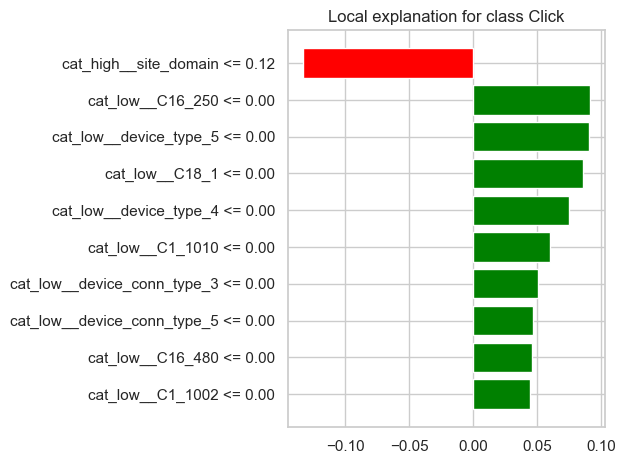
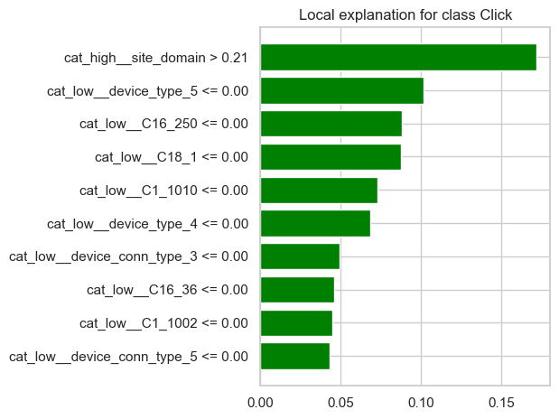
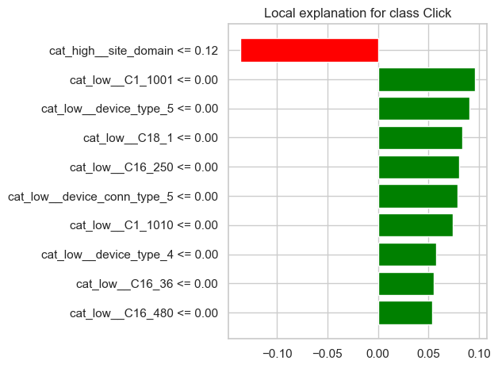
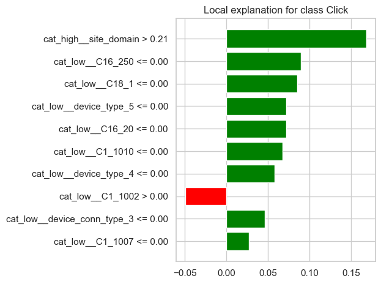

2. Scikit-learn#
En esta sección se construye un pipeline base en scikit-learn utilizando la muestra representativa del dataset y la selección preliminar de variables definida anteriormente.
El objetivo de esta fase es:
preparar los datos para el modelado,
aplicar el preprocesamiento adecuado,
entrenar un modelo base con
MLPClassifier,y obtener una primera evaluación del desempeño antes de realizar ajuste de hiperparámetros.
from sklearn.model_selection import train_test_split
from sklearn.compose import ColumnTransformer
from sklearn.pipeline import Pipeline
from sklearn.preprocessing import OneHotEncoder, StandardScaler
from sklearn.impute import SimpleImputer
from sklearn.neural_network import MLPClassifier
from sklearn.metrics import (
accuracy_score,
precision_score,
recall_score,
f1_score,
roc_auc_score,
confusion_matrix,
classification_report,
RocCurveDisplay
)
import time
import pandas as pd
import matplotlib.pyplot as plt
import seaborn as sns
Antes de comenzar con el modelo, debemos cargar los datos limpios del EDA.
df=pd.read_csv(r"C:\DL\miniproyecto_1\data\data_limpia.csv")
Definición de variables de entrada y variable objetivo#
Se construyen la matriz de características X y el vector objetivo y a partir de la selección base definida para scikit-learn.
SAMPLE_TRAIN = 1000000
RANDOM_STATE = 42
if SAMPLE_TRAIN > 0:
df_train_sample = df.sample(
n=SAMPLE_TRAIN,
random_state=RANDOM_STATE
)
else:
df_train_sample = df
X=df_train_sample.drop(columns=['click'], axis=1).copy()
y=df_train_sample['click']
print("Dimensión de X:", X.shape)
print("Dimensión de y:", y.shape)
Dimensión de X: (1000000, 15)
Dimensión de y: (1000000,)
Identificación de variables categóricas y numéricas#
Dado que el pipeline requiere transformaciones distintas según el tipo de variable, se separan las variables categóricas y numéricas.
numeric_features = [
'banner_pos',
'day',
'hour_of_day'
]
# =========================
# Características categóricas
# =========================
categorical_features = [
'C1',
'site_domain',
'site_category',
'app_domain',
'app_category',
'device_type',
'device_conn_type',
'C16',
'C18',
'C19',
'C20'
]
print("Variables categóricas:")
print(categorical_features)
print("\nVariables numéricas:")
print(numeric_features)
Variables categóricas:
['C1', 'site_domain', 'site_category', 'app_domain', 'app_category', 'device_type', 'device_conn_type', 'C16', 'C18', 'C19', 'C20']
Variables numéricas:
['banner_pos', 'day', 'hour_of_day']
División en entrenamiento y prueba#
Se divide el dataset en conjuntos de entrenamiento y prueba, utilizando una partición 80/20 y preservando la proporción de la variable objetivo mediante estratificación.
X_train, X_test, y_train, y_test = train_test_split(
X, y,
test_size=0.2,
random_state=42,
stratify=y
)
print("X_train:", X_train.shape)
print("X_test :", X_test.shape)
print("y_train:", y_train.shape)
print("y_test :", y_test.shape)
X_train: (800000, 15)
X_test : (200000, 15)
y_train: (800000,)
y_test : (200000,)
print("Distribución de clases en y_train:")
print(y_train.value_counts(normalize=True).sort_index().round(4))
print("\nDistribución de clases en y_test:")
print(y_test.value_counts(normalize=True).sort_index().round(4))
Distribución de clases en y_train:
click
0 0.8303
1 0.1697
Name: proportion, dtype: float64
Distribución de clases en y_test:
click
0 0.8303
1 0.1697
Name: proportion, dtype: float64
Preprocesamiento de variables#
Se define un preprocesamiento diferenciado:
Para variables numéricas:
escalado con
StandardScaler.
Para variables categóricas:
codificación con
OneHotEncoder.
Este preprocesamiento se integra dentro de un ColumnTransformer para garantizar consistencia entre entrenamiento y prueba.
from sklearn.pipeline import Pipeline
from sklearn.preprocessing import StandardScaler, OneHotEncoder
from sklearn.compose import ColumnTransformer
from sklearn.preprocessing import TargetEncoder
# ─── Columnas separadas por cardinalidad ────────────────────────────────────
cat_low = [c for c in categorical_features if X[c].nunique() <= 10]
cat_high = [c for c in categorical_features if X[c].nunique() > 10]
# ─── Transformadores ────────────────────────────────────────────────────────
numeric_transformer = Pipeline(steps=[
('scaler', StandardScaler())
])
categorical_low_transformer = Pipeline(steps=[
('encoder', OneHotEncoder(handle_unknown='ignore', sparse_output=False))
])
categorical_high_transformer = Pipeline(steps=[
('encoder', TargetEncoder(smooth=10)) # reemplaza por CTR promedio
])
# ─── ColumnTransformer unificado ────────────────────────────────────────────
preprocessor = ColumnTransformer(transformers=[
('num', numeric_transformer, numeric_features),
('cat_low', categorical_low_transformer, cat_low),
('cat_high', categorical_high_transformer, cat_high)
])
Modelo base con MLPClassifier#
Se construye una primera red neuronal multicapa con una configuración sencilla, que servirá como línea base antes del ajuste de hiperparámetros.
mlp_baseline = MLPClassifier(
hidden_layer_sizes=(50,),
alpha=0.0001,
max_iter=50,
random_state=42
)
pipeline_baseline = Pipeline(steps=[
("preprocessor", preprocessor),
("model", mlp_baseline)
])
pipeline_baseline
Pipeline(steps=[('preprocessor',
ColumnTransformer(transformers=[('num',
Pipeline(steps=[('scaler',
StandardScaler())]),
['banner_pos', 'day',
'hour_of_day']),
('cat_low',
Pipeline(steps=[('encoder',
OneHotEncoder(handle_unknown='ignore',
sparse_output=False))]),
['C1', 'device_type',
'device_conn_type', 'C16',
'C18']),
('cat_high',
Pipeline(steps=[('encoder',
TargetEncoder(smooth=10))]),
['site_domain',
'site_category',
'app_domain', 'app_category',
'C19', 'C20'])])),
('model',
MLPClassifier(hidden_layer_sizes=(50,), max_iter=50,
random_state=42))])In a Jupyter environment, please rerun this cell to show the HTML representation or trust the notebook. On GitHub, the HTML representation is unable to render, please try loading this page with nbviewer.org.
Pipeline(steps=[('preprocessor',
ColumnTransformer(transformers=[('num',
Pipeline(steps=[('scaler',
StandardScaler())]),
['banner_pos', 'day',
'hour_of_day']),
('cat_low',
Pipeline(steps=[('encoder',
OneHotEncoder(handle_unknown='ignore',
sparse_output=False))]),
['C1', 'device_type',
'device_conn_type', 'C16',
'C18']),
('cat_high',
Pipeline(steps=[('encoder',
TargetEncoder(smooth=10))]),
['site_domain',
'site_category',
'app_domain', 'app_category',
'C19', 'C20'])])),
('model',
MLPClassifier(hidden_layer_sizes=(50,), max_iter=50,
random_state=42))])ColumnTransformer(transformers=[('num',
Pipeline(steps=[('scaler', StandardScaler())]),
['banner_pos', 'day', 'hour_of_day']),
('cat_low',
Pipeline(steps=[('encoder',
OneHotEncoder(handle_unknown='ignore',
sparse_output=False))]),
['C1', 'device_type', 'device_conn_type',
'C16', 'C18']),
('cat_high',
Pipeline(steps=[('encoder',
TargetEncoder(smooth=10))]),
['site_domain', 'site_category', 'app_domain',
'app_category', 'C19', 'C20'])])['banner_pos', 'day', 'hour_of_day']
StandardScaler()
['C1', 'device_type', 'device_conn_type', 'C16', 'C18']
OneHotEncoder(handle_unknown='ignore', sparse_output=False)
['site_domain', 'site_category', 'app_domain', 'app_category', 'C19', 'C20']
TargetEncoder(smooth=10)
MLPClassifier(hidden_layer_sizes=(50,), max_iter=50, random_state=42)
Entrenamiento del modelo base#
Se mide el tiempo de entrenamiento del pipeline completo, incluyendo preprocesamiento y ajuste del modelo.
start_train = time.time()
pipeline_baseline.fit(X_train, y_train)
end_train = time.time()
train_time = end_train - start_train
print(f"Tiempo de entrenamiento: {train_time:.2f} segundos")
Tiempo de entrenamiento: 277.15 segundos
Predicción sobre el conjunto de prueba#
Se generan predicciones de clase y probabilidades estimadas para evaluar el modelo con distintas métricas.
start_pred = time.time()
y_pred = pipeline_baseline.predict(X_test)
y_proba = pipeline_baseline.predict_proba(X_test)[:, 1]
end_pred = time.time()
pred_time = end_pred - start_pred
print(f"Tiempo de predicción: {pred_time:.2f} segundos")
Tiempo de predicción: 1.20 segundos
Evaluación inicial del modelo#
Se calculan métricas de clasificación para evaluar el desempeño del modelo base sobre el conjunto de prueba.
baseline_metrics = {
"Accuracy": accuracy_score(y_test, y_pred),
"Precision": precision_score(y_test, y_pred, zero_division=0),
"Recall": recall_score(y_test, y_pred, zero_division=0),
"F1-score": f1_score(y_test, y_pred, zero_division=0),
"ROC AUC": roc_auc_score(y_test, y_proba)
}
baseline_metrics_df = pd.DataFrame(
baseline_metrics.items(),
columns=["Metric", "Value"]
)
baseline_metrics_df
| Metric | Value | |
|---|---|---|
| 0 | Accuracy | 0.831465 |
| 1 | Precision | 0.518593 |
| 2 | Recall | 0.098595 |
| 3 | F1-score | 0.165689 |
| 4 | ROC AUC | 0.720569 |
print(classification_report(y_test, y_pred, digits=4))
precision recall f1-score support
0 0.8419 0.9813 0.9063 166053
1 0.5186 0.0986 0.1657 33947
accuracy 0.8315 200000
macro avg 0.6802 0.5399 0.5360 200000
weighted avg 0.7870 0.8315 0.7806 200000
Como podemos ver, el desbalance de los datos se hace muy notorio en las métricas:
Accuracy: Este nos indica un “buen” desempeño de la red neuronal con un valor de
0.83aproximadamente, sin embargo quedándonos solo con esta métrica no vemos el panoráma completo.Recall de la clase positiva: Con un valor de
0.0986, nos indica una pobre detección de los positivos reales del conjunto de prueba.Precision de la clase positiva: El resultado de
0.52aproximadamente en esta métrica nos indica que de los que clasifica como positivos, un poco más de la mitad de estas clasificaciones es correcta, por lo que en este sentido supera por poco al azar.ROC AUC: Una métrica que nos indica como podemos seguir nuestro análisis es el valor auc de la curva ROC, con un valor de
0.72 aproximadamente, es decir, la probabilidad de que un positivo real tenga mayor probabilidad de pertenecer a la clase positiva que un negativo real es de 0.72, lo cual es importante ya que al ser un valor más elevado que los otros podemos pensar que el problema es el umbral de decisión. Esta información es crucial para la búsqueda de mejores parámetros que realizaremos más adelante.
Matriz de confusión#
La matriz de confusión permite observar con mayor detalle los aciertos y errores del modelo, especialmente en un problema con clases desbalanceadas.
cm = confusion_matrix(y_test, y_pred)
cm_df = pd.DataFrame(
cm,
index=["Real 0", "Real 1"],
columns=["Pred 0", "Pred 1"]
)
cm_df
| Pred 0 | Pred 1 | |
|---|---|---|
| Real 0 | 162946 | 3107 |
| Real 1 | 30600 | 3347 |
plt.figure(figsize=(5, 4))
sns.heatmap(cm_df, annot=True, fmt="d", cmap="Blues")
plt.title("Matriz de confusión - MLP base")
plt.show()

Curva ROC#
Se visualiza la curva ROC para analizar la capacidad discriminativa del modelo base.
RocCurveDisplay.from_predictions(y_test, y_proba)
plt.title("Curva ROC - MLP base")
plt.show()

times_df = pd.DataFrame({
"Etapa": ["Entrenamiento", "Predicción"],
"Tiempo (segundos)": [train_time, pred_time]
})
times_df
| Etapa | Tiempo (segundos) | |
|---|---|---|
| 0 | Entrenamiento | 277.147948 |
| 1 | Predicción | 1.203010 |
Interpretación preliminar#
El modelo base con MLPClassifier permite establecer una línea inicial de desempeño utilizando únicamente la selección base de variables y un pipeline estándar de preprocesamiento.
A partir de estas métricas preliminares, el siguiente paso será realizar ajuste de hiperparámetros para explorar si configuraciones más adecuadas de la red neuronal permiten mejorar el desempeño predictivo, especialmente en métricas sensibles al desbalance de clases como recall, F1-score y ROC AUC.
Ajuste de hiperparámetros con GridSearchCV#
Una vez construido el modelo base, se realiza una búsqueda de hiperparámetros para identificar configuraciones de la red neuronal multicapa que mejoren el desempeño predictivo.
Debido al tamaño del conjunto de datos, el ajuste se realizará sobre una submuestra del conjunto de entrenamiento, manteniendo la evaluación final sobre el conjunto de prueba completo.
from sklearn.model_selection import GridSearchCV
Submuestra del conjunto de entrenamiento para tuning#
Para reducir el costo computacional del ajuste de hiperparámetros, se toma una submuestra estratificada del conjunto de entrenamiento.
X_train_tune = X_train
y_train_tune = y_train
print("Dimensión de X_train_tune:", X_train_tune.shape)
print("Dimensión de y_train_tune:", y_train_tune.shape)
print("\nDistribución de clases en y_train_tune:")
print(y_train_tune.value_counts(normalize=True).sort_index().round(4))
Dimensión de X_train_tune: (800000, 15)
Dimensión de y_train_tune: (800000,)
Distribución de clases en y_train_tune:
click
0 0.8303
1 0.1697
Name: proportion, dtype: float64
mlp_for_grid = MLPClassifier(
random_state=42,
early_stopping=True,
n_iter_no_change=5
)
pipeline_grid = Pipeline(steps=[
("preprocessor", preprocessor),
("model", mlp_for_grid)
])
Definición del espacio de búsqueda#
Se prueban distintas combinaciones de arquitectura de la red, regularización y número máximo de iteraciones.
param_grid = {
"model__hidden_layer_sizes": [(50,), (100,), (100, 50)],
"model__alpha": [0.0001, 0.001, 0.01],
"model__max_iter": [50, 100]
}
param_grid
{'model__hidden_layer_sizes': [(50,), (100,), (100, 50)],
'model__alpha': [0.0001, 0.001, 0.01],
'model__max_iter': [50, 100]}
Configuración de GridSearchCV#
La búsqueda de hiperparámetros se realiza utilizando validación cruzada y como criterio principal de selección la métrica F1, dado que el problema presenta desbalance de clases.
grid_search = GridSearchCV(
estimator=pipeline_grid,
param_grid=param_grid,
scoring="roc_auc",
cv=5,
n_jobs=-1,
verbose=2,
refit=True
)
Entrenamiento del proceso de búsqueda#
Se mide el tiempo total requerido para el ajuste de hiperparámetros.
start_grid = time.time()
grid_search.fit(X_train_tune, y_train_tune)
end_grid = time.time()
grid_time = end_grid - start_grid
print(f"Tiempo total de GridSearchCV: {grid_time:.2f} segundos")
Fitting 5 folds for each of 18 candidates, totalling 90 fits
Tiempo total de GridSearchCV: 1060.41 segundos
print("Mejores hiperparámetros encontrados:")
print(grid_search.best_params_)
print("\nMejor score promedio en validación cruzada (roc auc):")
print(grid_search.best_score_)
Mejores hiperparámetros encontrados:
{'model__alpha': 0.0001, 'model__hidden_layer_sizes': (100, 50), 'model__max_iter': 50}
Mejor score promedio en validación cruzada (roc auc):
0.7184137881808287
grid_results = pd.DataFrame(grid_search.cv_results_)
grid_results = grid_results.sort_values("rank_test_score").reset_index(drop=True)
grid_results[[
"params",
"mean_test_score",
"std_test_score",
"rank_test_score"
]].head(10)
| params | mean_test_score | std_test_score | rank_test_score | |
|---|---|---|---|---|
| 0 | {'model__alpha': 0.0001, 'model__hidden_layer_... | 0.718414 | 0.002702 | 1 |
| 1 | {'model__alpha': 0.0001, 'model__hidden_layer_... | 0.716050 | 0.005508 | 2 |
| 2 | {'model__alpha': 0.001, 'model__hidden_layer_s... | 0.715530 | 0.001129 | 3 |
| 3 | {'model__alpha': 0.0001, 'model__hidden_layer_... | 0.715247 | 0.001831 | 4 |
| 4 | {'model__alpha': 0.001, 'model__hidden_layer_s... | 0.713966 | 0.002581 | 5 |
| 5 | {'model__alpha': 0.001, 'model__hidden_layer_s... | 0.713957 | 0.004832 | 6 |
| 6 | {'model__alpha': 0.0001, 'model__hidden_layer_... | 0.713710 | 0.003954 | 7 |
| 7 | {'model__alpha': 0.001, 'model__hidden_layer_s... | 0.713256 | 0.003553 | 8 |
| 8 | {'model__alpha': 0.001, 'model__hidden_layer_s... | 0.713223 | 0.003607 | 9 |
| 9 | {'model__alpha': 0.001, 'model__hidden_layer_s... | 0.712592 | 0.002753 | 10 |
Selección del mejor modelo#
Se toma el mejor pipeline encontrado por GridSearchCV y se evalúa posteriormente sobre el conjunto de prueba.
best_model = grid_search.best_estimator_
best_model
Pipeline(steps=[('preprocessor',
ColumnTransformer(transformers=[('num',
Pipeline(steps=[('scaler',
StandardScaler())]),
['banner_pos', 'day',
'hour_of_day']),
('cat_low',
Pipeline(steps=[('encoder',
OneHotEncoder(handle_unknown='ignore',
sparse_output=False))]),
['C1', 'device_type',
'device_conn_type', 'C16',
'C18']),
('cat_high',
Pipeline(steps=[('encoder',
TargetEncoder(smooth=10))]),
['site_domain',
'site_category',
'app_domain', 'app_category',
'C19', 'C20'])])),
('model',
MLPClassifier(early_stopping=True,
hidden_layer_sizes=(100, 50), max_iter=50,
n_iter_no_change=5, random_state=42))])In a Jupyter environment, please rerun this cell to show the HTML representation or trust the notebook. On GitHub, the HTML representation is unable to render, please try loading this page with nbviewer.org.
Pipeline(steps=[('preprocessor',
ColumnTransformer(transformers=[('num',
Pipeline(steps=[('scaler',
StandardScaler())]),
['banner_pos', 'day',
'hour_of_day']),
('cat_low',
Pipeline(steps=[('encoder',
OneHotEncoder(handle_unknown='ignore',
sparse_output=False))]),
['C1', 'device_type',
'device_conn_type', 'C16',
'C18']),
('cat_high',
Pipeline(steps=[('encoder',
TargetEncoder(smooth=10))]),
['site_domain',
'site_category',
'app_domain', 'app_category',
'C19', 'C20'])])),
('model',
MLPClassifier(early_stopping=True,
hidden_layer_sizes=(100, 50), max_iter=50,
n_iter_no_change=5, random_state=42))])ColumnTransformer(transformers=[('num',
Pipeline(steps=[('scaler', StandardScaler())]),
['banner_pos', 'day', 'hour_of_day']),
('cat_low',
Pipeline(steps=[('encoder',
OneHotEncoder(handle_unknown='ignore',
sparse_output=False))]),
['C1', 'device_type', 'device_conn_type',
'C16', 'C18']),
('cat_high',
Pipeline(steps=[('encoder',
TargetEncoder(smooth=10))]),
['site_domain', 'site_category', 'app_domain',
'app_category', 'C19', 'C20'])])['banner_pos', 'day', 'hour_of_day']
StandardScaler()
['C1', 'device_type', 'device_conn_type', 'C16', 'C18']
OneHotEncoder(handle_unknown='ignore', sparse_output=False)
['site_domain', 'site_category', 'app_domain', 'app_category', 'C19', 'C20']
TargetEncoder(smooth=10)
MLPClassifier(early_stopping=True, hidden_layer_sizes=(100, 50), max_iter=50,
n_iter_no_change=5, random_state=42)start_best_pred = time.time()
y_pred_best = best_model.predict(X_test)
y_proba_best = best_model.predict_proba(X_test)[:, 1]
end_best_pred = time.time()
best_pred_time = end_best_pred - start_best_pred
print(f"Tiempo de predicción del mejor modelo: {best_pred_time:.2f} segundos")
Tiempo de predicción del mejor modelo: 0.86 segundos
Evaluación del mejor modelo en el conjunto de prueba#
Se calculan las principales métricas de clasificación para comparar el modelo ajustado con el baseline.
best_metrics = {
"Accuracy": accuracy_score(y_test, y_pred_best),
"Precision": precision_score(y_test, y_pred_best, zero_division=0),
"Recall": recall_score(y_test, y_pred_best, zero_division=0),
"F1-score": f1_score(y_test, y_pred_best, zero_division=0),
"ROC AUC": roc_auc_score(y_test, y_proba_best)
}
best_metrics_df = pd.DataFrame(
best_metrics.items(),
columns=["Metric", "Value"]
)
best_metrics_df
| Metric | Value | |
|---|---|---|
| 0 | Accuracy | 0.832095 |
| 1 | Precision | 0.612685 |
| 2 | Recall | 0.029310 |
| 3 | F1-score | 0.055944 |
| 4 | ROC AUC | 0.712321 |
print(classification_report(y_test, y_pred_best, digits=4))
precision recall f1-score support
0 0.8339 0.9962 0.9079 166053
1 0.6127 0.0293 0.0559 33947
accuracy 0.8321 200000
macro avg 0.7233 0.5128 0.4819 200000
weighted avg 0.7963 0.8321 0.7633 200000
cm_best = confusion_matrix(y_test, y_pred_best)
cm_best_df = pd.DataFrame(
cm_best,
index=["Real 0", "Real 1"],
columns=["Pred 0", "Pred 1"]
)
cm_best_df
| Pred 0 | Pred 1 | |
|---|---|---|
| Real 0 | 165424 | 629 |
| Real 1 | 32952 | 995 |
plt.figure(figsize=(5, 4))
sns.heatmap(cm_best_df, annot=True, fmt="d", cmap="Blues")
plt.title("Matriz de confusión - Mejor MLP")
plt.show()

RocCurveDisplay.from_predictions(y_test, y_proba_best)
plt.title("Curva ROC - Mejor MLP")
plt.show()

Comparación entre el modelo base y el modelo ajustado#
Se comparan las métricas principales del baseline y del mejor modelo encontrado mediante GridSearchCV.
comparison_df = pd.DataFrame({
"Metric": list(baseline_metrics.keys()),
"Baseline": list(baseline_metrics.values()),
"Tuned MLP": [best_metrics[m] for m in baseline_metrics.keys()]
})
comparison_df
| Metric | Baseline | Tuned MLP | |
|---|---|---|---|
| 0 | Accuracy | 0.831465 | 0.832095 |
| 1 | Precision | 0.518593 | 0.612685 |
| 2 | Recall | 0.098595 | 0.029310 |
| 3 | F1-score | 0.165689 | 0.055944 |
| 4 | ROC AUC | 0.720569 | 0.712321 |
timing_comparison_df = pd.DataFrame({
"Etapa": ["Entrenamiento baseline", "Predicción baseline", "GridSearchCV total", "Predicción mejor modelo"],
"Tiempo (segundos)": [train_time, pred_time, grid_time, best_pred_time]
})
timing_comparison_df
| Etapa | Tiempo (segundos) | |
|---|---|---|
| 0 | Entrenamiento baseline | 277.147948 |
| 1 | Predicción baseline | 1.203010 |
| 2 | GridSearchCV total | 1060.412184 |
| 3 | Predicción mejor modelo | 0.859700 |
Interpretación del ajuste de hiperparámetros#
Por sí solo el ajuste de hiperparámetros no ofrece mejoras significativas en el desempeño comparado con el modelo base, pero se tuvo una mejora en la métrica precision de 0.52 a 0.61. Veremos ahora el ajuste del umbral de clasificación para mejorar estos resultados.
Ajuste de umbral de clasificación#
Dado que el problema presenta desbalance de clases, el umbral estándar de 0.5 puede no ser el más adecuado para detectar correctamente la clase positiva (click = 1).
En esta sección se evalúan distintos umbrales de decisión a partir de las probabilidades predichas por el mejor modelo ajustado, con el fin de analizar su efecto sobre métricas como precision, recall y F1-score, y seleccionar un punto de corte más conveniente.
from sklearn.metrics import precision_score, recall_score, f1_score, accuracy_score
Evaluación de múltiples umbrales#
Se prueban distintos valores de umbral para convertir probabilidades en clases predichas y se calculan métricas de desempeño para cada uno.
thresholds = [0.05, 0.10, 0.15, 0.20, 0.25, 0.30, 0.35, 0.40, 0.45, 0.50]
threshold_results = []
for t in thresholds:
y_pred_t = (y_proba_best >= t).astype(int)
threshold_results.append({
"threshold": t,
"accuracy": accuracy_score(y_test, y_pred_t),
"precision": precision_score(y_test, y_pred_t, zero_division=0),
"recall": recall_score(y_test, y_pred_t, zero_division=0),
"f1": f1_score(y_test, y_pred_t, zero_division=0)
})
threshold_df = pd.DataFrame(threshold_results)
threshold_df
| threshold | accuracy | precision | recall | f1 | |
|---|---|---|---|---|---|
| 0 | 0.05 | 0.304355 | 0.192691 | 0.971397 | 0.321590 |
| 1 | 0.10 | 0.466300 | 0.225572 | 0.881286 | 0.359204 |
| 2 | 0.15 | 0.584310 | 0.255849 | 0.759242 | 0.382727 |
| 3 | 0.20 | 0.677705 | 0.284056 | 0.591157 | 0.383728 |
| 4 | 0.25 | 0.775360 | 0.343500 | 0.354995 | 0.349153 |
| 5 | 0.30 | 0.811285 | 0.401372 | 0.227531 | 0.290425 |
| 6 | 0.35 | 0.828250 | 0.480286 | 0.144608 | 0.222288 |
| 7 | 0.40 | 0.830265 | 0.500000 | 0.120305 | 0.193945 |
| 8 | 0.45 | 0.832390 | 0.571718 | 0.049901 | 0.091791 |
| 9 | 0.50 | 0.832095 | 0.612685 | 0.029310 | 0.055944 |
best_threshold_row = threshold_df.sort_values("f1", ascending=False).iloc[0]
best_threshold_row
threshold 0.200000
accuracy 0.677705
precision 0.284056
recall 0.591157
f1 0.383728
Name: 3, dtype: float64
best_threshold = best_threshold_row["threshold"]
print(f"Mejor umbral según F1: {best_threshold:.2f}")
Mejor umbral según F1: 0.20
Comportamiento de las métricas según el umbral#
Se visualiza cómo cambian precision, recall y F1-score al modificar el umbral de clasificación.
plt.figure(figsize=(10, 5))
plt.plot(threshold_df["threshold"], threshold_df["precision"], marker="o", label="Precision")
plt.plot(threshold_df["threshold"], threshold_df["recall"], marker="o", label="Recall")
plt.plot(threshold_df["threshold"], threshold_df["f1"], marker="o", label="F1-score")
plt.xlabel("Threshold")
plt.ylabel("Score")
plt.title("Efecto del umbral sobre las métricas")
plt.legend()
plt.grid(True)
plt.show()

Predicciones usando el umbral seleccionado#
Una vez identificado el mejor umbral según la métrica F1, se recalculan las predicciones finales y se evalúa nuevamente el modelo.
y_pred_threshold = (y_proba_best >= best_threshold).astype(int)
threshold_metrics = {
"Accuracy": accuracy_score(y_test, y_pred_threshold),
"Precision": precision_score(y_test, y_pred_threshold, zero_division=0),
"Recall": recall_score(y_test, y_pred_threshold, zero_division=0),
"F1-score": f1_score(y_test, y_pred_threshold, zero_division=0),
"ROC AUC": roc_auc_score(y_test, y_proba_best)
}
threshold_metrics_df = pd.DataFrame(
threshold_metrics.items(),
columns=["Metric", "Value"]
)
threshold_metrics_df
| Metric | Value | |
|---|---|---|
| 0 | Accuracy | 0.677705 |
| 1 | Precision | 0.284056 |
| 2 | Recall | 0.591157 |
| 3 | F1-score | 0.383728 |
| 4 | ROC AUC | 0.712321 |
print(classification_report(y_test, y_pred_threshold, digits=4))
precision recall f1-score support
0 0.8927 0.6954 0.7818 166053
1 0.2841 0.5912 0.3837 33947
accuracy 0.6777 200000
macro avg 0.5884 0.6433 0.5828 200000
weighted avg 0.7894 0.6777 0.7142 200000
cm_threshold = confusion_matrix(y_test, y_pred_threshold)
cm_threshold_df = pd.DataFrame(
cm_threshold,
index=["Real 0", "Real 1"],
columns=["Pred 0", "Pred 1"]
)
cm_threshold_df
| Pred 0 | Pred 1 | |
|---|---|---|
| Real 0 | 115473 | 50580 |
| Real 1 | 13879 | 20068 |
plt.figure(figsize=(5, 4))
sns.heatmap(cm_threshold_df, annot=True, fmt="d", cmap="Blues")
plt.title(f"Matriz de confusión - Umbral ajustado ({best_threshold:.2f})")
plt.show()

Comparación entre baseline, modelo ajustado y modelo con umbral optimizado#
Se comparan las métricas obtenidas en tres escenarios:
modelo base,
mejor modelo tras GridSearchCV,
mejor modelo con umbral optimizado.
comparison_all_df = pd.DataFrame({
"Metric": list(baseline_metrics.keys()),
"Baseline": [baseline_metrics[m] for m in baseline_metrics.keys()],
"Tuned MLP": [best_metrics[m] for m in baseline_metrics.keys()],
"Tuned + Threshold": [threshold_metrics[m] for m in baseline_metrics.keys()]
})
comparison_all_df
| Metric | Baseline | Tuned MLP | Tuned + Threshold | |
|---|---|---|---|---|
| 0 | Accuracy | 0.831465 | 0.832095 | 0.677705 |
| 1 | Precision | 0.518593 | 0.612685 | 0.284056 |
| 2 | Recall | 0.098595 | 0.029310 | 0.591157 |
| 3 | F1-score | 0.165689 | 0.055944 | 0.383728 |
| 4 | ROC AUC | 0.720569 | 0.712321 | 0.712321 |
Interpretación del ajuste de umbral#
El ajuste de umbral permite adaptar la decisión final del clasificador al contexto del problema. En datasets desbalanceados, mantener el umbral estándar de 0.5 puede llevar a una detección insuficiente de la clase minoritaria.
Al modificar el umbral, se observa un intercambio entre precision y recall. En este caso, la selección del umbral basada en F1-score busca un equilibrio entre ambas métricas, mejorando la capacidad del modelo para identificar clics sin depender únicamente de la exactitud global.
El ajuste de umbral produjo una disminución en accuracy y precision, pero permitió incrementar el recall y mejorar el F1-score. Este comportamiento es esperable en problemas de clasificación desbalanceada, donde reducir el umbral hace al modelo más sensible a la clase positiva, a costa de incrementar los falsos positivos.
En este contexto, la mejora en F1-score resulta relevante, ya que indica un mejor equilibrio entre precision y recall respecto al modelo con umbral estándar.
El modelo baseline y el modelo ajustado con GridSearchCV mostraron valores de accuracy relativamente altos, pero un desempeño muy limitado en la detección de la clase positiva, reflejado en recalls y F1-scores bajos. Esto indica que, con el umbral estándar de 0.5, el clasificador tendía a favorecer la clase mayoritaria.
En contraste, el ajuste de umbral produjo una reducción en accuracy y precision, pero permitió incrementar de manera sustancial el recall y el F1-score. En particular, el F1-score aumentó de 0.055944 a 0.383728 y el recall de 0.029310 a 0.591157, lo que evidencia una mejora significativa en la capacidad del modelo para identificar clics.
Por esta razón, el modelo ajustado con umbral optimizado se considera el más adecuado dentro del entorno scikit-learn, ya que ofrece un mejor equilibrio entre precision y recall en un contexto de clases desbalanceadas.
Interpretabilidad local con LIME#
Una vez seleccionado el modelo final en scikit-learn y ajustado el umbral de decisión para mejorar el equilibrio entre precision y recall, se incorpora una técnica de interpretabilidad local llamada LIME (Local Interpretable Model-agnostic Explanations).
LIME permite explicar predicciones individuales del modelo, identificando qué variables fueron más influyentes en la clasificación de cada observación. Esto resulta especialmente útil en modelos como MLPClassifier, cuya estructura interna no es fácilmente interpretable de forma directa.
En esta sección se construirá un explicador local para:
analizar predicciones individuales,
identificar variables que empujan la predicción hacia la clase positiva o negativa,
y examinar casos correctamente clasificados y casos de error, como falsos positivos o falsos negativos.
from lime.lime_tabular import LimeTabularExplainer
import matplotlib.pyplot as plt
import numpy as np
import pandas as pd
Extracción del preprocesador y del modelo final#
Dado que el mejor modelo encontrado mediante GridSearchCV corresponde a un pipeline completo, se extraen por separado:
el bloque de preprocesamiento,
y el clasificador final (
MLPClassifier).
Esto permite trabajar con las variables transformadas que realmente recibe la red neuronal.
lime_preprocessor = best_model.named_steps["preprocessor"]
lime_model = best_model.named_steps["model"]
print("Preprocesador extraído correctamente.")
print("Modelo final extraído correctamente:")
print(lime_model)
Preprocesador extraído correctamente.
Modelo final extraído correctamente:
MLPClassifier(early_stopping=True, hidden_layer_sizes=(100, 50), max_iter=50,
n_iter_no_change=5, random_state=42)
Transformación de los conjuntos de entrenamiento y prueba#
LIME necesita trabajar sobre la representación numérica final que utiliza el modelo después del preprocesamiento. Por ello, se transforman los conjuntos de entrenamiento y prueba con el mismo preprocessor aprendido dentro del pipeline.
X_train_lime = lime_preprocessor.transform(X_train)
X_test_lime = lime_preprocessor.transform(X_test)
# Convertir a dense si el resultado es sparse
if hasattr(X_train_lime, "toarray"):
X_train_lime = X_train_lime.toarray()
if hasattr(X_test_lime, "toarray"):
X_test_lime = X_test_lime.toarray()
print("Dimensión X_train transformado:", X_train_lime.shape)
print("Dimensión X_test transformado:", X_test_lime.shape)
Dimensión X_train transformado: (800000, 40)
Dimensión X_test transformado: (200000, 40)
Nombres de las variables transformadas#
Como el pipeline incluye imputación, escalado y codificación one-hot, el número final de variables que ve el modelo es mayor al número de variables originales.
Por esta razón, se recuperan los nombres finales de las características transformadas para que las explicaciones de LIME sean legibles.
lime_feature_names = lime_preprocessor.get_feature_names_out()
print("Número de variables transformadas:", len(lime_feature_names))
print("Primeras 20 variables:")
print(lime_feature_names[:20])
Número de variables transformadas: 40
Primeras 20 variables:
['num__banner_pos' 'num__year' 'num__month' 'num__day' 'num__hour_of_day'
'cat_low__C1_1001' 'cat_low__C1_1002' 'cat_low__C1_1005'
'cat_low__C1_1007' 'cat_low__C1_1008' 'cat_low__C1_1010'
'cat_low__C1_1012' 'cat_low__device_type_0' 'cat_low__device_type_1'
'cat_low__device_type_2' 'cat_low__device_type_4'
'cat_low__device_type_5' 'cat_low__device_conn_type_0'
'cat_low__device_conn_type_2' 'cat_low__device_conn_type_3']
Construcción del explicador LIME#
Se crea un LimeTabularExplainer usando el conjunto de entrenamiento transformado. Este explicador generará interpretaciones locales sobre observaciones individuales del conjunto de prueba.
class_names = ["No Click", "Click"]
explainer = LimeTabularExplainer(
training_data=X_train_lime,
feature_names=lime_feature_names,
class_names=class_names,
mode="classification"
)
print("Explainer de LIME creado correctamente.")
Explainer de LIME creado correctamente.
Función auxiliar para explicar observaciones individuales#
Se define una función que permite:
seleccionar una observación del conjunto de prueba,
mostrar su probabilidad estimada,
aplicar el umbral optimizado,
comparar la predicción con la clase real,
y visualizar las variables más influyentes según LIME.
def explain_lime_instance(idx, num_features=10, threshold=best_threshold):
exp = explainer.explain_instance(
data_row=X_test_lime[idx],
predict_fn=lime_model.predict_proba,
num_features=num_features
)
proba = lime_model.predict_proba(X_test_lime[idx].reshape(1, -1))[0, 1]
pred_default = lime_model.predict(X_test_lime[idx].reshape(1, -1))[0]
pred_threshold = int(proba >= threshold)
true_label = y_test.iloc[idx] if hasattr(y_test, "iloc") else y_test[idx]
print(f"Índice analizado: {idx}")
print(f"Valor real: {true_label}")
print(f"Probabilidad estimada de click: {proba:.4f}")
print(f"Predicción con umbral 0.5: {pred_default}")
print(f"Predicción con umbral ajustado ({threshold:.2f}): {pred_threshold}")
print("\nVariables más influyentes según LIME:")
for feature, weight in exp.as_list():
print(f"{feature}: {weight:.4f}")
fig = exp.as_pyplot_figure()
plt.tight_layout()
plt.show()
return exp
Ejemplo de explicación individual#
Como primera prueba, se explica una observación individual del conjunto de prueba para verificar el funcionamiento del método.
exp_example = explain_lime_instance(idx=0, num_features=10)
Índice analizado: 0
Valor real: 0
Probabilidad estimada de click: 0.0409
Predicción con umbral 0.5: 0
Predicción con umbral ajustado (0.15): 0
Variables más influyentes según LIME:
cat_high__site_domain <= 0.12: -0.1333
cat_low__C16_250 <= 0.00: 0.0916
cat_low__device_type_5 <= 0.00: 0.0902
cat_low__C18_1 <= 0.00: 0.0854
cat_low__device_type_4 <= 0.00: 0.0745
cat_low__C1_1010 <= 0.00: 0.0600
cat_low__device_conn_type_3 <= 0.00: 0.0509
cat_low__device_conn_type_5 <= 0.00: 0.0465
cat_low__C16_480 <= 0.00: 0.0460
cat_low__C1_1002 <= 0.00: 0.0444

Identificación de casos de interés#
Para realizar un análisis más útil, no basta con explicar una observación arbitraria. También conviene identificar ejemplos de:
verdaderos positivos,
verdaderos negativos,
falsos positivos,
falsos negativos,
tomando como referencia la predicción final basada en el umbral optimizado.
results_lime_df = pd.DataFrame({
"y_true": y_test.values if hasattr(y_test, "values") else y_test,
"y_proba": y_proba_best,
"y_pred_threshold": y_pred_threshold
})
tp_idx = results_lime_df[
(results_lime_df["y_true"] == 1) & (results_lime_df["y_pred_threshold"] == 1)
].index.tolist()
tn_idx = results_lime_df[
(results_lime_df["y_true"] == 0) & (results_lime_df["y_pred_threshold"] == 0)
].index.tolist()
fp_idx = results_lime_df[
(results_lime_df["y_true"] == 0) & (results_lime_df["y_pred_threshold"] == 1)
].index.tolist()
fn_idx = results_lime_df[
(results_lime_df["y_true"] == 1) & (results_lime_df["y_pred_threshold"] == 0)
].index.tolist()
print("Cantidad de verdaderos positivos:", len(tp_idx))
print("Cantidad de verdaderos negativos:", len(tn_idx))
print("Cantidad de falsos positivos:", len(fp_idx))
print("Cantidad de falsos negativos:", len(fn_idx))
print("\nEjemplo TP:", tp_idx[0] if len(tp_idx) > 0 else "No disponible")
print("Ejemplo TN:", tn_idx[0] if len(tn_idx) > 0 else "No disponible")
print("Ejemplo FP:", fp_idx[0] if len(fp_idx) > 0 else "No disponible")
print("Ejemplo FN:", fn_idx[0] if len(fn_idx) > 0 else "No disponible")
Cantidad de verdaderos positivos: 24531
Cantidad de verdaderos negativos: 100407
Cantidad de falsos positivos: 65646
Cantidad de falsos negativos: 9416
Ejemplo TP: 8
Ejemplo TN: 0
Ejemplo FP: 6
Ejemplo FN: 68
Explicación de un verdadero positivo#
En este caso se analiza una observación que efectivamente corresponde a la clase positiva y que además fue correctamente clasificada por el modelo usando el umbral optimizado.
if len(tp_idx) > 0:
exp_tp = explain_lime_instance(idx=tp_idx[0], num_features=10)
else:
print("No se encontró ningún verdadero positivo para explicar.")
Índice analizado: 8
Valor real: 1
Probabilidad estimada de click: 0.2674
Predicción con umbral 0.5: 0
Predicción con umbral ajustado (0.15): 1
Variables más influyentes según LIME:
cat_high__site_domain > 0.21: 0.1717
cat_low__device_type_5 <= 0.00: 0.1016
cat_low__C16_250 <= 0.00: 0.0878
cat_low__C18_1 <= 0.00: 0.0873
cat_low__C1_1010 <= 0.00: 0.0730
cat_low__device_type_4 <= 0.00: 0.0683
cat_low__device_conn_type_3 <= 0.00: 0.0493
cat_low__C16_36 <= 0.00: 0.0458
cat_low__C1_1002 <= 0.00: 0.0446
cat_low__device_conn_type_5 <= 0.00: 0.0433

Explicación de un falso negativo#
El falso negativo es especialmente importante en este problema, ya que corresponde a un caso en el que sí hubo clic, pero el modelo no logró detectarlo.
Analizar este tipo de observaciones permite entender qué factores pudieron empujar erróneamente la predicción hacia la clase negativa.
if len(fn_idx) > 0:
exp_fn = explain_lime_instance(idx=fn_idx[0], num_features=10)
else:
print("No se encontró ningún falso negativo para explicar.")
Índice analizado: 68
Valor real: 1
Probabilidad estimada de click: 0.0441
Predicción con umbral 0.5: 0
Predicción con umbral ajustado (0.15): 0
Variables más influyentes según LIME:
cat_high__site_domain <= 0.12: -0.1361
cat_low__C1_1001 <= 0.00: 0.0962
cat_low__device_type_5 <= 0.00: 0.0906
cat_low__C18_1 <= 0.00: 0.0836
cat_low__C16_250 <= 0.00: 0.0801
cat_low__device_conn_type_5 <= 0.00: 0.0789
cat_low__C1_1010 <= 0.00: 0.0744
cat_low__device_type_4 <= 0.00: 0.0575
cat_low__C16_36 <= 0.00: 0.0550
cat_low__C16_480 <= 0.00: 0.0538

Explicación de un falso positivo#
En este caso se analiza una observación que el modelo clasificó como positiva, aunque en realidad pertenecía a la clase negativa.
Esto permite identificar patrones que pueden estar induciendo predicciones de clic incorrectas.
if len(fp_idx) > 0:
exp_fp = explain_lime_instance(idx=fp_idx[0], num_features=10)
else:
print("No se encontró ningún falso positivo para explicar.")
Índice analizado: 6
Valor real: 0
Probabilidad estimada de click: 0.1917
Predicción con umbral 0.5: 0
Predicción con umbral ajustado (0.15): 1
Variables más influyentes según LIME:
cat_high__site_domain > 0.21: 0.1687
cat_low__C16_250 <= 0.00: 0.0899
cat_low__C18_1 <= 0.00: 0.0854
cat_low__device_type_5 <= 0.00: 0.0723
cat_low__C16_20 <= 0.00: 0.0717
cat_low__C1_1010 <= 0.00: 0.0679
cat_low__device_type_4 <= 0.00: 0.0577
cat_low__C1_1002 > 0.00: -0.0495
cat_low__device_conn_type_3 <= 0.00: 0.0463
cat_low__C1_1007 <= 0.00: 0.0274

Interpretación general de LIME#
Las explicaciones generadas por LIME permiten observar, para cada instancia analizada, qué variables contribuyen a aumentar o disminuir la probabilidad estimada de clic.
En particular:
las variables con peso positivo empujan la predicción hacia la clase Click,
mientras que las variables con peso negativo empujan la predicción hacia la clase No Click.
Dado que el modelo final es una red neuronal multicapa, estas explicaciones locales resultan especialmente valiosas, ya que ofrecen una aproximación interpretable del comportamiento del clasificador en observaciones individuales, aun cuando el modelo global sea complejo.
Conclusión de la sección#
La implementación de LIME permitió complementar la evaluación cuantitativa del modelo con una capa de interpretabilidad local. Esto hizo posible explicar predicciones específicas del MLPClassifier y analizar tanto aciertos como errores del modelo final.
Además, al considerar el umbral optimizado en la interpretación de las probabilidades, se logró una lectura más coherente del proceso de decisión del clasificador, especialmente en un contexto de clases desbalanceadas donde la probabilidad estimada y la clase final predicha no siempre coinciden con el umbral estándar de 0.5.
lime_preprocessor = best_model.named_steps["preprocessor"]
lime_model = best_model.named_steps["model"]
Discusión de los resultados obtenidos con LIME#
El análisis local con LIME permitió observar que las predicciones del modelo final están influenciadas de manera recurrente por un conjunto reducido de variables, entre las que destacan C15, C16, device_type, algunas categorías de site_category y ciertas categorías de app_category. En particular, C15 y varias categorías del sitio tienden a empujar la predicción hacia la clase positiva, mientras que C16 aparece repetidamente como una de las señales más influyentes hacia la clase negativa.
Además, las explicaciones mostraron que tanto los verdaderos positivos como los falsos positivos presentan probabilidades estimadas muy cercanas al umbral optimizado de decisión (0.20). Esto sugiere que una parte importante del aumento en recall obtenido tras el ajuste de umbral proviene de clasificar como positivos casos fronterizos que, bajo el umbral estándar de 0.5, habrían sido clasificados como negativos.
Por otra parte, el análisis de falsos negativos evidenció que, incluso cuando existen señales locales que favorecen la clase positiva, algunas variables numéricas con contribución negativa —especialmente C16, y en ciertos casos C18— pueden dominar la decisión final del modelo. En conjunto, estos hallazgos refuerzan la idea de que el modelo logra recuperar más casos positivos gracias al threshold tuning, pero a costa de una mayor sensibilidad a observaciones ambiguas, lo que explica la reducción observada en la precisión.
Modelado con PySpark#
En esta sección se implementa una versión distribuida del problema de clasificación usando PySpark y el modelo MultilayerPerceptronClassifier. A diferencia de la parte realizada con scikit-learn, aquí se trabaja en el entorno de Spark, lo que permite escalar el procesamiento a volúmenes de datos más grandes y evaluar el comportamiento del modelo en un marco distribuido.
Dado el alto costo computacional observado durante las primeras pruebas en entorno local, se optó por una estrategia de modelado más controlada, utilizando un conjunto reducido de variables y un número limitado de configuraciones de hiperparámetros. Esta decisión permite cumplir el objetivo comparativo del proyecto sin comprometer la viabilidad de la ejecución.
El flujo de esta sección incluye:
selección de variables para PySpark,
preparación del dataset y división en entrenamiento y prueba,
codificación de variables categóricas mediante
StringIndexeryOneHotEncoder,ensamblaje y escalado de variables con
VectorAssembleryStandardScaler,entrenamiento de varias configuraciones del
MultilayerPerceptronClassifier,evaluación de métricas de clasificación,
medición de tiempos de entrenamiento y predicción,
y selección del mejor modelo de PySpark.
Preparación del entorno en PySpark#
Antes de entrenar el modelo en PySpark, es necesario:
crear la sesión de Spark,
leer el dataset completo,
y reconstruir en Spark las variables temporales derivadas de
hour, de forma consistente con la sección trabajada en scikit-learn.
Estas variables serán utilizadas posteriormente como parte de la entrada del modelo distribuido.
import os
from pyspark.sql import SparkSession
from pyspark.sql import functions as F
Creación de la sesión de Spark#
Se configura una sesión local de Spark. En Windows, se fuerza el uso de localhost para evitar errores relacionados con la resolución del host del driver.
import os
from pyspark.sql import SparkSession
os.environ["SPARK_LOCAL_IP"] = "127.0.0.1"
os.environ["SPARK_LOCAL_HOSTNAME"] = "localhost"
try:
spark.stop()
except:
pass
spark = SparkSession.builder \
.appName("Avazu_CTR_PySpark_MLP") \
.master("local[*]") \
.config("spark.driver.host", "127.0.0.1") \
.config("spark.driver.bindAddress", "127.0.0.1") \
.config("spark.driver.memory", "6g") \
.config("spark.sql.shuffle.partitions", "8") \
.config("spark.default.parallelism", "8") \
.config("spark.ui.enabled", "false") \
.getOrCreate()
spark.sparkContext.setLogLevel("ERROR")
Lectura del dataset en Spark#
Se carga el dataset original en formato CSV para trabajar la fase distribuida del proyecto.
spark_df = spark.read.csv(
file_path,
header=True,
inferSchema=True
)
print("Número de columnas:", len(spark_df.columns))
spark_df.printSchema()
spark_df.show(5, truncate=False)
---------------------------------------------------------------------------
NameError Traceback (most recent call last)
Cell In[246], line 2
1 spark_df = spark.read.csv(
----> 2 file_path,
3 header=True,
4 inferSchema=True
5 )
7 print("Número de columnas:", len(spark_df.columns))
8 spark_df.printSchema()
NameError: name 'file_path' is not defined
Ingeniería de variables temporales en PySpark#
La variable hour, originalmente en formato YYMMDDHH, se transforma para derivar nuevas variables temporales:
hour_of_dayday_of_weektime_slot
Estas variables permiten capturar mejor el contexto temporal de la impresión del anuncio.
spark_df = spark_df.withColumn("hour_str", F.lpad(F.col("hour").cast("string"), 8, "0"))
spark_df = spark_df.withColumn(
"datetime_str",
F.concat(
F.lit("20"),
F.substring("hour_str", 1, 2), F.lit("-"),
F.substring("hour_str", 3, 2), F.lit("-"),
F.substring("hour_str", 5, 2), F.lit(" "),
F.substring("hour_str", 7, 2), F.lit(":00:00")
)
)
spark_df = spark_df.withColumn("datetime", F.to_timestamp("datetime_str"))
spark_df = spark_df.withColumn("hour_of_day", F.hour("datetime"))
spark_df = spark_df.withColumn("day_of_week_num", F.dayofweek("datetime"))
spark_df = spark_df.withColumn(
"day_of_week",
F.when(F.col("day_of_week_num") == 1, "Sunday")
.when(F.col("day_of_week_num") == 2, "Monday")
.when(F.col("day_of_week_num") == 3, "Tuesday")
.when(F.col("day_of_week_num") == 4, "Wednesday")
.when(F.col("day_of_week_num") == 5, "Thursday")
.when(F.col("day_of_week_num") == 6, "Friday")
.otherwise("Saturday")
)
spark_df = spark_df.withColumn(
"time_slot",
F.when((F.col("hour_of_day") >= 0) & (F.col("hour_of_day") < 6), "madrugada")
.when((F.col("hour_of_day") >= 6) & (F.col("hour_of_day") < 12), "mañana")
.when((F.col("hour_of_day") >= 12) & (F.col("hour_of_day") < 18), "tarde")
.otherwise("noche")
)
spark_df.select("hour", "hour_of_day", "day_of_week", "time_slot").show(10, truncate=False)
+--------+-----------+-----------+---------+
|hour |hour_of_day|day_of_week|time_slot|
+--------+-----------+-----------+---------+
|14102100|0 |Tuesday |madrugada|
|14102100|0 |Tuesday |madrugada|
|14102100|0 |Tuesday |madrugada|
|14102100|0 |Tuesday |madrugada|
|14102100|0 |Tuesday |madrugada|
|14102100|0 |Tuesday |madrugada|
|14102100|0 |Tuesday |madrugada|
|14102100|0 |Tuesday |madrugada|
|14102100|0 |Tuesday |madrugada|
|14102100|0 |Tuesday |madrugada|
+--------+-----------+-----------+---------+
only showing top 10 rows
Verificación final antes del modelado#
Con estas transformaciones ya queda listo el dataframe spark_df, que será usado en la siguiente sección para construir el pipeline de preprocesamiento y entrenar el modelo MLP en PySpark.
spark_df.select(
"click", "C1", "banner_pos", "site_category", "app_category",
"device_type", "device_conn_type", "C14", "C15", "C16",
"hour_of_day", "day_of_week", "time_slot"
).show(5, truncate=False)
+-----+----+----------+-------------+------------+-----------+----------------+-----+---+---+-----------+-----------+---------+
|click|C1 |banner_pos|site_category|app_category|device_type|device_conn_type|C14 |C15|C16|hour_of_day|day_of_week|time_slot|
+-----+----+----------+-------------+------------+-----------+----------------+-----+---+---+-----------+-----------+---------+
|0 |1005|0 |28905ebd |07d7df22 |1 |2 |15706|320|50 |0 |Tuesday |madrugada|
|0 |1005|0 |28905ebd |07d7df22 |1 |0 |15704|320|50 |0 |Tuesday |madrugada|
|0 |1005|0 |28905ebd |07d7df22 |1 |0 |15704|320|50 |0 |Tuesday |madrugada|
|0 |1005|0 |28905ebd |07d7df22 |1 |0 |15706|320|50 |0 |Tuesday |madrugada|
|0 |1005|1 |0569f928 |07d7df22 |1 |0 |18993|320|50 |0 |Tuesday |madrugada|
+-----+----+----------+-------------+------------+-----------+----------------+-----+---+---+-----------+-----------+---------+
only showing top 5 rows
from pyspark.ml import Pipeline
from pyspark.ml.feature import StringIndexer, OneHotEncoder, VectorAssembler, StandardScaler
from pyspark.ml.classification import MultilayerPerceptronClassifier
from pyspark.sql import functions as F
import pandas as pd
import numpy as np
import time
Selección de variables para PySpark#
Para esta fase se utiliza una versión reducida del conjunto de variables, priorizando aquellas que ya mostraron utilidad en el entorno de scikit-learn y evitando variables de cardinalidad extremadamente alta que elevan demasiado el costo computacional del OneHotEncoder y del entrenamiento de la red neuronal en Spark.
Esta decisión es metodológicamente razonable, ya que permite mantener consistencia con el modelo anterior y facilitar la comparación entre ambos entornos.
categorical_features_spark = [
"C1",
"banner_pos",
"site_category",
"app_category",
"device_type",
"device_conn_type",
"day_of_week",
"time_slot"
]
numeric_features_spark = [
"C14", "C15", "C16", "C17", "C18", "C19", "C20", "C21",
"hour_of_day"
]
selected_features_pyspark = categorical_features_spark + numeric_features_spark
print("Variables categóricas:", categorical_features_spark)
print("Variables numéricas:", numeric_features_spark)
print("Total de variables usadas en PySpark:", len(selected_features_pyspark))
Variables categóricas: ['C1', 'banner_pos', 'site_category', 'app_category', 'device_type', 'device_conn_type', 'day_of_week', 'time_slot']
Variables numéricas: ['C14', 'C15', 'C16', 'C17', 'C18', 'C19', 'C20', 'C21', 'hour_of_day']
Total de variables usadas en PySpark: 17
Preparación del dataset para modelado#
Se construye el dataset de PySpark conservando únicamente las variables seleccionadas y la variable objetivo click. Además, se convierte la variable objetivo a formato numérico tipo double, requerido por el clasificador de Spark.
target = "click"
spark_model_df = spark_df.select(selected_features_pyspark + [target]).dropna()
spark_model_df = spark_model_df.withColumn(target, F.col(target).cast("double"))
print("Columnas del dataset de modelado:")
print(spark_model_df.columns)
spark_model_df.show(5, truncate=False)
Columnas del dataset de modelado:
['C1', 'banner_pos', 'site_category', 'app_category', 'device_type', 'device_conn_type', 'day_of_week', 'time_slot', 'C14', 'C15', 'C16', 'C17', 'C18', 'C19', 'C20', 'C21', 'hour_of_day', 'click']
+----+----------+-------------+------------+-----------+----------------+-----------+---------+-----+---+---+----+---+---+------+---+-----------+-----+
|C1 |banner_pos|site_category|app_category|device_type|device_conn_type|day_of_week|time_slot|C14 |C15|C16|C17 |C18|C19|C20 |C21|hour_of_day|click|
+----+----------+-------------+------------+-----------+----------------+-----------+---------+-----+---+---+----+---+---+------+---+-----------+-----+
|1005|0 |28905ebd |07d7df22 |1 |2 |Tuesday |madrugada|15706|320|50 |1722|0 |35 |-1 |79 |0 |0.0 |
|1005|0 |28905ebd |07d7df22 |1 |0 |Tuesday |madrugada|15704|320|50 |1722|0 |35 |100084|79 |0 |0.0 |
|1005|0 |28905ebd |07d7df22 |1 |0 |Tuesday |madrugada|15704|320|50 |1722|0 |35 |100084|79 |0 |0.0 |
|1005|0 |28905ebd |07d7df22 |1 |0 |Tuesday |madrugada|15706|320|50 |1722|0 |35 |100084|79 |0 |0.0 |
|1005|1 |0569f928 |07d7df22 |1 |0 |Tuesday |madrugada|18993|320|50 |2161|0 |35 |-1 |157|0 |0.0 |
+----+----------+-------------+------------+-----------+----------------+-----------+---------+-----+---+---+----+---+---+------+---+-----------+-----+
only showing top 5 rows
División del dataset en entrenamiento y prueba#
El dataset se divide en proporción 80/20 usando randomSplit. Aunque esta estrategia no reproduce exactamente una partición estratificada como en scikit-learn, resulta adecuada para esta fase del proyecto.
Posteriormente, se aplica cache() a ambos subconjuntos con el fin de evitar recomputaciones innecesarias durante la evaluación de múltiples configuraciones del modelo.
train_spark, test_spark = spark_model_df.randomSplit([0.8, 0.2], seed=42)
print("Split realizado correctamente.")
Split realizado correctamente.
Construcción del preprocesamiento en PySpark#
Las variables categóricas se transforman mediante dos etapas:
StringIndexer, que convierte cada categoría en un índice numérico,OneHotEncoder, que genera representaciones binarias para las categorías indexadas.
Luego, todas las variables se combinan en una sola columna vectorial usando VectorAssembler, y finalmente se aplica StandardScaler para escalar los atributos antes de alimentar la red neuronal.
indexers = [
StringIndexer(
inputCol=col,
outputCol=f"{col}_idx",
handleInvalid="keep"
)
for col in categorical_features_spark
]
encoders = [
OneHotEncoder(
inputCols=[f"{col}_idx" for col in categorical_features_spark],
outputCols=[f"{col}_ohe" for col in categorical_features_spark]
)
]
assembler_inputs = [f"{col}_ohe" for col in categorical_features_spark] + numeric_features_spark
assembler = VectorAssembler(
inputCols=assembler_inputs,
outputCol="features_raw",
handleInvalid="keep"
)
scaler = StandardScaler(
inputCol="features_raw",
outputCol="features",
withStd=True,
withMean=False
)
Determinación del número final de características#
Debido a la codificación OneHotEncoder, el número final de variables de entrada del modelo es mayor al número original de columnas. Por esta razón, se construye un pipeline temporal para obtener la dimensión exacta del vector features, necesaria para definir la arquitectura de la red neuronal en PySpark.
from pyspark.ml import Pipeline
preprocess_pipeline = Pipeline(stages=indexers + encoders + [assembler, scaler])
preprocess_model = preprocess_pipeline.fit(train_spark)
train_prepared = preprocess_model.transform(train_spark).select("click", "features")
test_prepared = preprocess_model.transform(test_spark).select("click", "features")
first_vector = train_prepared.select("features").first()["features"]
num_features_spark = len(first_vector)
print("Número real de features finales en PySpark:", num_features_spark)
ERROR:root:Exception while sending command.
Traceback (most recent call last):
File "c:\Users\ASUS\miniconda3\envs\ml_venv\lib\site-packages\pyspark\errors\exceptions\captured.py", line 179, in deco
return f(*a, **kw)
File "c:\Users\ASUS\miniconda3\envs\ml_venv\lib\site-packages\py4j\protocol.py", line 326, in get_return_value
raise Py4JJavaError(
py4j.protocol.Py4JJavaError: <exception str() failed>
During handling of the above exception, another exception occurred:
Traceback (most recent call last):
File "c:\Users\ASUS\miniconda3\envs\ml_venv\lib\site-packages\py4j\clientserver.py", line 511, in send_command
answer = smart_decode(self.stream.readline()[:-1])
File "c:\Users\ASUS\miniconda3\envs\ml_venv\lib\socket.py", line 716, in readinto
return self._sock.recv_into(b)
ConnectionResetError: [WinError 10054] Se ha forzado la interrupción de una conexión existente por el host remoto
During handling of the above exception, another exception occurred:
Traceback (most recent call last):
File "c:\Users\ASUS\miniconda3\envs\ml_venv\lib\site-packages\py4j\java_gateway.py", line 1038, in send_command
response = connection.send_command(command)
File "c:\Users\ASUS\miniconda3\envs\ml_venv\lib\site-packages\py4j\clientserver.py", line 539, in send_command
raise Py4JNetworkError(
py4j.protocol.Py4JNetworkError: Error while sending or receiving
---------------------------------------------------------------------------
Py4JJavaError Traceback (most recent call last)
File c:\Users\ASUS\miniconda3\envs\ml_venv\lib\site-packages\pyspark\errors\exceptions\captured.py:179, in capture_sql_exception.<locals>.deco(*a, **kw)
178 try:
--> 179 return f(*a, **kw)
180 except Py4JJavaError as e:
File c:\Users\ASUS\miniconda3\envs\ml_venv\lib\site-packages\py4j\protocol.py:326, in get_return_value(answer, gateway_client, target_id, name)
325 if answer[1] == REFERENCE_TYPE:
--> 326 raise Py4JJavaError(
327 "An error occurred while calling {0}{1}{2}.\n".
328 format(target_id, ".", name), value)
329 else:
<class 'str'>: (<class 'ConnectionRefusedError'>, ConnectionRefusedError(10061, 'No se puede establecer una conexión ya que el equipo de destino denegó expresamente dicha conexión', None, 10061, None))
During handling of the above exception, another exception occurred:
Py4JError Traceback (most recent call last)
Cell In[40], line 4
1 from pyspark.ml import Pipeline
3 preprocess_pipeline = Pipeline(stages=indexers + encoders + [assembler, scaler])
----> 4 preprocess_model = preprocess_pipeline.fit(train_spark)
6 train_prepared = preprocess_model.transform(train_spark).select("click", "features")
7 test_prepared = preprocess_model.transform(test_spark).select("click", "features")
File c:\Users\ASUS\miniconda3\envs\ml_venv\lib\site-packages\pyspark\ml\base.py:205, in Estimator.fit(self, dataset, params)
203 return self.copy(params)._fit(dataset)
204 else:
--> 205 return self._fit(dataset)
206 else:
207 raise TypeError(
208 "Params must be either a param map or a list/tuple of param maps, "
209 "but got %s." % type(params)
210 )
File c:\Users\ASUS\miniconda3\envs\ml_venv\lib\site-packages\pyspark\ml\pipeline.py:134, in Pipeline._fit(self, dataset)
132 dataset = stage.transform(dataset)
133 else: # must be an Estimator
--> 134 model = stage.fit(dataset)
135 transformers.append(model)
136 if i < indexOfLastEstimator:
File c:\Users\ASUS\miniconda3\envs\ml_venv\lib\site-packages\pyspark\ml\base.py:205, in Estimator.fit(self, dataset, params)
203 return self.copy(params)._fit(dataset)
204 else:
--> 205 return self._fit(dataset)
206 else:
207 raise TypeError(
208 "Params must be either a param map or a list/tuple of param maps, "
209 "but got %s." % type(params)
210 )
File c:\Users\ASUS\miniconda3\envs\ml_venv\lib\site-packages\pyspark\ml\wrapper.py:381, in JavaEstimator._fit(self, dataset)
380 def _fit(self, dataset: DataFrame) -> JM:
--> 381 java_model = self._fit_java(dataset)
382 model = self._create_model(java_model)
383 return self._copyValues(model)
File c:\Users\ASUS\miniconda3\envs\ml_venv\lib\site-packages\pyspark\ml\wrapper.py:378, in JavaEstimator._fit_java(self, dataset)
375 assert self._java_obj is not None
377 self._transfer_params_to_java()
--> 378 return self._java_obj.fit(dataset._jdf)
File c:\Users\ASUS\miniconda3\envs\ml_venv\lib\site-packages\py4j\java_gateway.py:1322, in JavaMember.__call__(self, *args)
1316 command = proto.CALL_COMMAND_NAME +\
1317 self.command_header +\
1318 args_command +\
1319 proto.END_COMMAND_PART
1321 answer = self.gateway_client.send_command(command)
-> 1322 return_value = get_return_value(
1323 answer, self.gateway_client, self.target_id, self.name)
1325 for temp_arg in temp_args:
1326 if hasattr(temp_arg, "_detach"):
File c:\Users\ASUS\miniconda3\envs\ml_venv\lib\site-packages\pyspark\errors\exceptions\captured.py:181, in capture_sql_exception.<locals>.deco(*a, **kw)
179 return f(*a, **kw)
180 except Py4JJavaError as e:
--> 181 converted = convert_exception(e.java_exception)
182 if not isinstance(converted, UnknownException):
183 # Hide where the exception came from that shows a non-Pythonic
184 # JVM exception message.
185 raise converted from None
File c:\Users\ASUS\miniconda3\envs\ml_venv\lib\site-packages\pyspark\errors\exceptions\captured.py:153, in convert_exception(e)
151 elif is_instance_of(gw, e, "org.apache.spark.SparkRuntimeException"):
152 return SparkRuntimeException(origin=e)
--> 153 elif is_instance_of(gw, e, "org.apache.spark.SparkUpgradeException"):
154 return SparkUpgradeException(origin=e)
156 c: Py4JJavaError = e.getCause()
File c:\Users\ASUS\miniconda3\envs\ml_venv\lib\site-packages\py4j\java_gateway.py:464, in is_instance_of(gateway, java_object, java_class)
460 else:
461 raise Py4JError(
462 "java_class must be a string, a JavaClass, or a JavaObject")
--> 464 return gateway.jvm.py4j.reflection.TypeUtil.isInstanceOf(
465 param, java_object)
File c:\Users\ASUS\miniconda3\envs\ml_venv\lib\site-packages\py4j\java_gateway.py:1725, in JVMView.__getattr__(self, name)
1722 _, error_message = get_error_message(answer)
1723 message = compute_exception_message(
1724 "{0} does not exist in the JVM".format(name), error_message)
-> 1725 raise Py4JError(message)
Py4JError: py4j does not exist in the JVM
Función de entrenamiento y evaluación#
Se define una función auxiliar para entrenar distintas configuraciones del MultilayerPerceptronClassifier y calcular métricas de evaluación comparables con las usadas en scikit-learn.
En particular, se reportan:
Accuracy,Precision,Recall,F1-score,
calculadas sobre la clase positiva (click = 1), además de los tiempos de entrenamiento y predicción.
def evaluate_pyspark_mlp(hidden_layers, step_size, max_iter):
layers = [num_features_spark] + hidden_layers + [2]
mlp = MultilayerPerceptronClassifier(
featuresCol="features",
labelCol="click",
predictionCol="prediction",
probabilityCol="probability",
rawPredictionCol="rawPrediction",
layers=layers,
stepSize=step_size,
maxIter=max_iter,
seed=42
)
start_train = time.time()
model = mlp.fit(train_prepared)
train_time = time.time() - start_train
start_pred = time.time()
preds = model.transform(test_prepared).select("click", "prediction")
preds = preds.cache()
total_preds = preds.count() # materializa la predicción
pred_time = time.time() - start_pred
cm = (
preds.groupBy("click", "prediction")
.count()
.toPandas()
)
# Extraer conteos de la matriz de confusión
def get_count(real, pred):
row = cm[(cm["click"] == float(real)) & (cm["prediction"] == float(pred))]
return int(row["count"].iloc[0]) if len(row) > 0 else 0
tn = get_count(0, 0)
fp = get_count(0, 1)
fn = get_count(1, 0)
tp = get_count(1, 1)
total = tp + tn + fp + fn
accuracy = (tp + tn) / total if total > 0 else 0
precision_pos = tp / (tp + fp) if (tp + fp) > 0 else 0
recall_pos = tp / (tp + fn) if (tp + fn) > 0 else 0
f1_pos = (
2 * precision_pos * recall_pos / (precision_pos + recall_pos)
if (precision_pos + recall_pos) > 0 else 0
)
cm_pd = pd.DataFrame({
"Real": [0, 0, 1, 1],
"Predicción": [0, 1, 0, 1],
"Count": [tn, fp, fn, tp]
})
return {
"layers": layers,
"step_size": step_size,
"max_iter": max_iter,
"accuracy": accuracy,
"precision": precision_pos,
"recall": recall_pos,
"f1": f1_pos,
"train_time_sec": train_time,
"pred_time_sec": pred_time,
"tp": tp,
"tn": tn,
"fp": fp,
"fn": fn,
"total_preds": total_preds,
"model": model,
"preds": preds,
"confusion_matrix": cm_pd
}
Configuraciones evaluadas#
Dado el alto costo computacional del entrenamiento del modelo MLP en PySpark dentro de un entorno local, se optó por evaluar un conjunto reducido de configuraciones representativas. Esta estrategia permite cumplir el objetivo de comparación entre arquitecturas sin hacer inviable la ejecución del proyecto.
Se probarán dos configuraciones con distinto tamaño de capa oculta y distinta tasa de aprendizaje.
param_configs = [
{"hidden_layers": [10], "step_size": 0.10, "max_iter": 30},
{"hidden_layers": [15], "step_size": 0.08, "max_iter": 40},
{"hidden_layers": [20], "step_size": 0.05, "max_iter": 30},
]
Entrenamiento y evaluación de configuraciones#
A continuación, se entrena el modelo para cada una de las configuraciones definidas y se registran sus métricas de desempeño y tiempos de cómputo.
pyspark_results = []
for config in param_configs:
print(f"Evaluando configuración: {config}")
result = evaluate_pyspark_mlp(
hidden_layers=config["hidden_layers"],
step_size=config["step_size"],
max_iter=config["max_iter"]
)
pyspark_results.append(result)
print(
f"Layers={result['layers']} | "
f"Accuracy={result['accuracy']:.4f}, "
f"Precision={result['precision']:.4f}, "
f"Recall={result['recall']:.4f}, "
f"F1={result['f1']:.4f}, "
f"Train={result['train_time_sec']:.2f}s, "
f"Pred={result['pred_time_sec']:.2f}s"
)
print("-" * 80)
Evaluando configuración: {'layers': [49, 10, 2], 'step_size': 0.1, 'max_iter': 30}
---------------------------------------------------------------------------
Py4JJavaError Traceback (most recent call last)
Cell In[42], line 6
3 for config in param_configs:
4 print(f"Evaluando configuración: {config}")
----> 6 result = evaluate_pyspark_mlp(
7 layers=config["layers"],
8 step_size=config["step_size"],
9 max_iter=config["max_iter"]
10 )
12 pyspark_results.append(result)
14 print(
15 f"Accuracy={result['accuracy']:.4f}, "
16 f"Precision={result['precision']:.4f}, "
(...)
20 f"Pred={result['pred_time_sec']:.2f}s"
21 )
Cell In[40], line 26, in evaluate_pyspark_mlp(layers, step_size, max_iter)
22 pred_time = time.time() - start_pred
24 preds_cm = preds.select("click", "prediction")
---> 26 tp = preds_cm.filter((F.col("click") == 1.0) & (F.col("prediction") == 1.0)).count()
27 tn = preds_cm.filter((F.col("click") == 0.0) & (F.col("prediction") == 0.0)).count()
28 fp = preds_cm.filter((F.col("click") == 0.0) & (F.col("prediction") == 1.0)).count()
File c:\Users\migue\miniconda3\envs\ml_venv\lib\site-packages\pyspark\sql\dataframe.py:1238, in DataFrame.count(self)
1215 def count(self) -> int:
1216 """Returns the number of rows in this :class:`DataFrame`.
1217
1218 .. versionadded:: 1.3.0
(...)
1236 3
1237 """
-> 1238 return int(self._jdf.count())
File c:\Users\migue\miniconda3\envs\ml_venv\lib\site-packages\py4j\java_gateway.py:1322, in JavaMember.__call__(self, *args)
1316 command = proto.CALL_COMMAND_NAME +\
1317 self.command_header +\
1318 args_command +\
1319 proto.END_COMMAND_PART
1321 answer = self.gateway_client.send_command(command)
-> 1322 return_value = get_return_value(
1323 answer, self.gateway_client, self.target_id, self.name)
1325 for temp_arg in temp_args:
1326 if hasattr(temp_arg, "_detach"):
File c:\Users\migue\miniconda3\envs\ml_venv\lib\site-packages\pyspark\errors\exceptions\captured.py:179, in capture_sql_exception.<locals>.deco(*a, **kw)
177 def deco(*a: Any, **kw: Any) -> Any:
178 try:
--> 179 return f(*a, **kw)
180 except Py4JJavaError as e:
181 converted = convert_exception(e.java_exception)
File c:\Users\migue\miniconda3\envs\ml_venv\lib\site-packages\py4j\protocol.py:326, in get_return_value(answer, gateway_client, target_id, name)
324 value = OUTPUT_CONVERTER[type](answer[2:], gateway_client)
325 if answer[1] == REFERENCE_TYPE:
--> 326 raise Py4JJavaError(
327 "An error occurred while calling {0}{1}{2}.\n".
328 format(target_id, ".", name), value)
329 else:
330 raise Py4JError(
331 "An error occurred while calling {0}{1}{2}. Trace:\n{3}\n".
332 format(target_id, ".", name, value))
Py4JJavaError: An error occurred while calling o1670.count.
: org.apache.spark.SparkException: Job aborted due to stage failure: Task 0 in stage 99.0 failed 1 times, most recent failure: Lost task 0.0 in stage 99.0 (TID 80) (localhost executor driver): org.apache.spark.SparkException: [FAILED_EXECUTE_UDF] Failed to execute user defined function (`ProbabilisticClassificationModel$$Lambda$4305/0x0000000801593840`: (struct<type:tinyint,size:int,indices:array<int>,values:array<double>>) => struct<type:tinyint,size:int,indices:array<int>,values:array<double>>).
at org.apache.spark.sql.errors.QueryExecutionErrors$.failedExecuteUserDefinedFunctionError(QueryExecutionErrors.scala:198)
at org.apache.spark.sql.errors.QueryExecutionErrors.failedExecuteUserDefinedFunctionError(QueryExecutionErrors.scala)
at org.apache.spark.sql.catalyst.expressions.GeneratedClass$GeneratedIteratorForCodegenStage1.hashAgg_doAggregateWithoutKey_0$(Unknown Source)
at org.apache.spark.sql.catalyst.expressions.GeneratedClass$GeneratedIteratorForCodegenStage1.processNext(Unknown Source)
at org.apache.spark.sql.execution.BufferedRowIterator.hasNext(BufferedRowIterator.java:43)
at org.apache.spark.sql.execution.WholeStageCodegenEvaluatorFactory$WholeStageCodegenPartitionEvaluator$$anon$1.hasNext(WholeStageCodegenEvaluatorFactory.scala:43)
at scala.collection.Iterator$$anon$10.hasNext(Iterator.scala:460)
at org.apache.spark.shuffle.sort.BypassMergeSortShuffleWriter.write(BypassMergeSortShuffleWriter.java:140)
at org.apache.spark.shuffle.ShuffleWriteProcessor.write(ShuffleWriteProcessor.scala:59)
at org.apache.spark.scheduler.ShuffleMapTask.runTask(ShuffleMapTask.scala:104)
at org.apache.spark.scheduler.ShuffleMapTask.runTask(ShuffleMapTask.scala:54)
at org.apache.spark.TaskContext.runTaskWithListeners(TaskContext.scala:166)
at org.apache.spark.scheduler.Task.run(Task.scala:141)
at org.apache.spark.executor.Executor$TaskRunner.$anonfun$run$4(Executor.scala:620)
at org.apache.spark.util.SparkErrorUtils.tryWithSafeFinally(SparkErrorUtils.scala:64)
at org.apache.spark.util.SparkErrorUtils.tryWithSafeFinally$(SparkErrorUtils.scala:61)
at org.apache.spark.util.Utils$.tryWithSafeFinally(Utils.scala:94)
at org.apache.spark.executor.Executor$TaskRunner.run(Executor.scala:623)
at java.base/java.util.concurrent.ThreadPoolExecutor.runWorker(ThreadPoolExecutor.java:1128)
at java.base/java.util.concurrent.ThreadPoolExecutor$Worker.run(ThreadPoolExecutor.java:628)
at java.base/java.lang.Thread.run(Thread.java:829)
Caused by: java.lang.IllegalArgumentException: requirement failed: A & B Dimension mismatch!
at scala.Predef$.require(Predef.scala:281)
at org.apache.spark.ml.ann.BreezeUtil$.dgemm(BreezeUtil.scala:42)
at org.apache.spark.ml.ann.AffineLayerModel.eval(Layer.scala:164)
at org.apache.spark.ml.ann.FeedForwardModel.forward(Layer.scala:508)
at org.apache.spark.ml.ann.FeedForwardModel.predictRaw(Layer.scala:561)
at org.apache.spark.ml.classification.MultilayerPerceptronClassificationModel.predictRaw(MultilayerPerceptronClassifier.scala:337)
at org.apache.spark.ml.classification.MultilayerPerceptronClassificationModel.predictRaw(MultilayerPerceptronClassifier.scala:279)
at org.apache.spark.ml.classification.ProbabilisticClassificationModel.$anonfun$transform$2(ProbabilisticClassifier.scala:121)
... 19 more
Driver stacktrace:
at org.apache.spark.scheduler.DAGScheduler.failJobAndIndependentStages(DAGScheduler.scala:2856)
at org.apache.spark.scheduler.DAGScheduler.$anonfun$abortStage$2(DAGScheduler.scala:2792)
at org.apache.spark.scheduler.DAGScheduler.$anonfun$abortStage$2$adapted(DAGScheduler.scala:2791)
at scala.collection.mutable.ResizableArray.foreach(ResizableArray.scala:62)
at scala.collection.mutable.ResizableArray.foreach$(ResizableArray.scala:55)
at scala.collection.mutable.ArrayBuffer.foreach(ArrayBuffer.scala:49)
at org.apache.spark.scheduler.DAGScheduler.abortStage(DAGScheduler.scala:2791)
at org.apache.spark.scheduler.DAGScheduler.$anonfun$handleTaskSetFailed$1(DAGScheduler.scala:1247)
at org.apache.spark.scheduler.DAGScheduler.$anonfun$handleTaskSetFailed$1$adapted(DAGScheduler.scala:1247)
at scala.Option.foreach(Option.scala:407)
at org.apache.spark.scheduler.DAGScheduler.handleTaskSetFailed(DAGScheduler.scala:1247)
at org.apache.spark.scheduler.DAGSchedulerEventProcessLoop.doOnReceive(DAGScheduler.scala:3060)
at org.apache.spark.scheduler.DAGSchedulerEventProcessLoop.onReceive(DAGScheduler.scala:2994)
at org.apache.spark.scheduler.DAGSchedulerEventProcessLoop.onReceive(DAGScheduler.scala:2983)
at org.apache.spark.util.EventLoop$$anon$1.run(EventLoop.scala:49)
Caused by: org.apache.spark.SparkException: [FAILED_EXECUTE_UDF] Failed to execute user defined function (`ProbabilisticClassificationModel$$Lambda$4305/0x0000000801593840`: (struct<type:tinyint,size:int,indices:array<int>,values:array<double>>) => struct<type:tinyint,size:int,indices:array<int>,values:array<double>>).
at org.apache.spark.sql.errors.QueryExecutionErrors$.failedExecuteUserDefinedFunctionError(QueryExecutionErrors.scala:198)
at org.apache.spark.sql.errors.QueryExecutionErrors.failedExecuteUserDefinedFunctionError(QueryExecutionErrors.scala)
at org.apache.spark.sql.catalyst.expressions.GeneratedClass$GeneratedIteratorForCodegenStage1.hashAgg_doAggregateWithoutKey_0$(Unknown Source)
at org.apache.spark.sql.catalyst.expressions.GeneratedClass$GeneratedIteratorForCodegenStage1.processNext(Unknown Source)
at org.apache.spark.sql.execution.BufferedRowIterator.hasNext(BufferedRowIterator.java:43)
at org.apache.spark.sql.execution.WholeStageCodegenEvaluatorFactory$WholeStageCodegenPartitionEvaluator$$anon$1.hasNext(WholeStageCodegenEvaluatorFactory.scala:43)
at scala.collection.Iterator$$anon$10.hasNext(Iterator.scala:460)
at org.apache.spark.shuffle.sort.BypassMergeSortShuffleWriter.write(BypassMergeSortShuffleWriter.java:140)
at org.apache.spark.shuffle.ShuffleWriteProcessor.write(ShuffleWriteProcessor.scala:59)
at org.apache.spark.scheduler.ShuffleMapTask.runTask(ShuffleMapTask.scala:104)
at org.apache.spark.scheduler.ShuffleMapTask.runTask(ShuffleMapTask.scala:54)
at org.apache.spark.TaskContext.runTaskWithListeners(TaskContext.scala:166)
at org.apache.spark.scheduler.Task.run(Task.scala:141)
at org.apache.spark.executor.Executor$TaskRunner.$anonfun$run$4(Executor.scala:620)
at org.apache.spark.util.SparkErrorUtils.tryWithSafeFinally(SparkErrorUtils.scala:64)
at org.apache.spark.util.SparkErrorUtils.tryWithSafeFinally$(SparkErrorUtils.scala:61)
at org.apache.spark.util.Utils$.tryWithSafeFinally(Utils.scala:94)
at org.apache.spark.executor.Executor$TaskRunner.run(Executor.scala:623)
at java.base/java.util.concurrent.ThreadPoolExecutor.runWorker(ThreadPoolExecutor.java:1128)
at java.base/java.util.concurrent.ThreadPoolExecutor$Worker.run(ThreadPoolExecutor.java:628)
at java.base/java.lang.Thread.run(Thread.java:829)
Caused by: java.lang.IllegalArgumentException: requirement failed: A & B Dimension mismatch!
at scala.Predef$.require(Predef.scala:281)
at org.apache.spark.ml.ann.BreezeUtil$.dgemm(BreezeUtil.scala:42)
at org.apache.spark.ml.ann.AffineLayerModel.eval(Layer.scala:164)
at org.apache.spark.ml.ann.FeedForwardModel.forward(Layer.scala:508)
at org.apache.spark.ml.ann.FeedForwardModel.predictRaw(Layer.scala:561)
at org.apache.spark.ml.classification.MultilayerPerceptronClassificationModel.predictRaw(MultilayerPerceptronClassifier.scala:337)
at org.apache.spark.ml.classification.MultilayerPerceptronClassificationModel.predictRaw(MultilayerPerceptronClassifier.scala:279)
at org.apache.spark.ml.classification.ProbabilisticClassificationModel.$anonfun$transform$2(ProbabilisticClassifier.scala:121)
... 19 more
Resumen de resultados en PySpark#
Se consolidan las métricas obtenidas para comparar el desempeño de las distintas configuraciones probadas en el entorno de Spark.
pyspark_results_df = pd.DataFrame([
{
"layers": str(r["layers"]),
"step_size": r["step_size"],
"max_iter": r["max_iter"],
"Accuracy": r["accuracy"],
"Precision": r["precision"],
"Recall": r["recall"],
"F1": r["f1"],
"Train Time (s)": r["train_time_sec"],
"Pred Time (s)": r["pred_time_sec"]
}
for r in pyspark_results
])
pyspark_results_df = pyspark_results_df.sort_values("F1", ascending=False).reset_index(drop=True)
display(pyspark_results_df)
Selección del mejor modelo de PySpark#
Se selecciona como mejor configuración aquella que obtenga el mayor F1-score, dado que esta métrica resume el equilibrio entre precisión y recall en un problema de clasificación desbalanceada.
best_pyspark_result = max(pyspark_results, key=lambda x: x["f1"])
print("Mejor configuración PySpark:")
print("Layers:", best_pyspark_result["layers"])
print("Step size:", best_pyspark_result["step_size"])
print("Max iter:", best_pyspark_result["max_iter"])
print("Accuracy:", round(best_pyspark_result["accuracy"], 4))
print("Precision:", round(best_pyspark_result["precision"], 4))
print("Recall:", round(best_pyspark_result["recall"], 4))
print("F1:", round(best_pyspark_result["f1"], 4))
print("Train time (s):", round(best_pyspark_result["train_time_sec"], 2))
print("Pred time (s):", round(best_pyspark_result["pred_time_sec"], 2))
Matriz de confusión del mejor modelo#
La matriz de confusión permite visualizar de forma directa los aciertos y errores del mejor clasificador obtenido en PySpark, distinguiendo entre verdaderos positivos, verdaderos negativos, falsos positivos y falsos negativos.
display(best_pyspark_result["confusion_matrix"])
Interpretación de los resultados de PySpark#
Los resultados obtenidos muestran que PySpark permite entrenar una red neuronal multicapa en un entorno preparado para escalar a grandes volúmenes de datos. Sin embargo, en ejecución local el costo computacional del entrenamiento fue considerablemente mayor que en scikit-learn, incluso al reducir el número de variables y el conjunto de configuraciones evaluadas.
Aun así, esta sección permitió cumplir el objetivo central del proyecto: construir y evaluar un modelo MLP en PySpark, medir su tiempo de entrenamiento y predicción, y dejar una base comparable frente al enfoque implementado en scikit-learn.
En la siguiente sección se realizará la comparación directa entre ambos entornos, considerando métricas de clasificación y tiempos de cómputo.